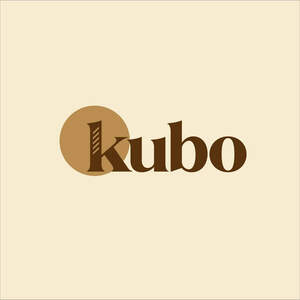
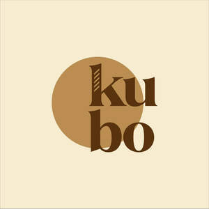

Trade Mark Journal No.2025/033 15 August 2025
UK00004242397 31 July 2025 (30,32,43,44)
Mark 1

Mark 2

- Class 30
- Tea; Oolong tea [Chinese tea]; Oolong tea; Rooibos tea; Chai tea; Iced tea; Tea (Iced -); Chamomile tea; Tieguanyin tea; Darjeeling tea; Herbal tea; Peppermint tea; Black tea [English tea]; Ginseng tea; Ginger tea; Jasmine tea; Tea cakes; Tea beverages; Green tea; Tea bags for making non-medicated tea; Tea for infusions; Instant Oolong tea; Tea bags; Rosemary tea; Barley tea; Buckwheat tea; Fermented tea; Tea extracts; Tea leaves; Citron tea; Flavourings of tea; Kelp tea; Tea beverages with milk; Sage tea; Tea pods; Lapsang souchong tea; Lime tea; Black tea; White tea; Teas; Iced tea (Non-medicated -); Tea essences; Linden tea; Iced teas; Herb tea [infusions]; Yellow tea; Mate [tea]; Beverages with tea base; Beverages with a tea base; Barley-leaf tea; Red ginseng tea; Instant tea; Tea mixtures; Ginseng tea [insamcha]; Tea (Non-medicated -); Tea substitutes; Herbal tea [other than for medicinal use]; Artificial tea; Beverages made of tea; Instant green tea; Japanese green tea; Non-medicinal herbal tea; Theine-free tea; Herbal teas; Tisanes made of tea (Non-medicated -); Iced tea mix powders; Tea beverages (Non-medicated -); Packaged tea [other than for medicinal use]; Chrysanthemum tea (Gukhwacha); Roasted barley tea [mugicha]; Apple flavoured tea [other than for medicinal use]; Tea bags (Non-medicated -); Iced coffee; Jasmine tea bags, other than for medicinal purposes; Fruit flavoured tea [other than medicinal]; Roasted barley tea; Lime blossom tea; Instant white tea; Orange flavoured tea [other than for medicinal use]; Fruit teas; Instant black tea; Coffee; Artificial tea [other than for medicinal use]; Jasmine tea, other than for medicinal purposes; Tea extracts (Non-medicated -); Rose hip tea; Mugi-cha [roasted barley tea]; Decaffeinated coffee; Yuja-cha (Korean honey citron tea); Flavourings of tea for food or beverages; Coffee, teas and cocoa and substitutes therefor; Herbal teas [infusions]; Caffeine-free coffee; Earl grey tea; Earl Grey tea; Tea essences (Non-medicated -); Theine-free tea sweetened with sweeteners; Roasted brown rice tea; Coffee drinks; Cocoa drinks; Ice cream drinks; Drinks prepared from chocolate; Drinks prepared from cocoa; Drinks flavoured with chocolate; Coffee beverages; Chocolate beverages; Coffee beverages with milk; Ice beverages with a coffee base; Prepared coffee beverages; Coffee-based beverages; Beverages (Coffee-based -); Coffee based drinks; Ice; Ice milk [ice cream]; Ice cream; Cream (Ice -); Ice cubes; Ice lollies; Ice creams; Water ice; Ice [frozen water]; Ice, ice creams, frozen yogurts and sorbets; Ice cream cones; Cones for ice cream; Cooling ice; Ice confectionery; Ice cream confectionery; Ice candy; Ice cream sandwiches; Ice cream desserts; Ice cream with fruit; Fruit ice cream; Ice cream confections; Ice cream bars; Ice cream cakes; Dairy ice cream; Ice confections; Ice candies; Fruit ice; Non-dairy ice cream; Ice for refreshment; Sauces for ice cream; Yoghurt based ice cream [ice cream predominating]; Ice cream gateaux; Ice cream powder; Powders for ice cream; Ice cream powders; Ice blocks; Edible ice; Ice cream mixes; Fruit ice creams; Vegan ice cream; Imitation ice cream; Ice pops; Frozen confectionery containing ice cream; Ice cream cone mixes; Ice cream substitute; Ice cream stick bars; Ice beverages with a chocolate base; Ice cream infused with alcohol; Ice milk bars; Ice creams flavoured with chocolate; Powder for making ice cream; Ice creams containing chocolate; Binding agents for ice cream [edible ices]; Binding preparations for ice cream [edible ices]; Ice lollies being milk flavoured; Mixtures for making ice cream; Powders for making ice cream; Fruit ice bars; Substances for binding ice cream; Ice beverages with a cocoa base; Instant ice cream mixes; Soya-based ice cream substitutes; Edible ice sculptures; Ice lollies containing milk; Edible ice powder for use in icing machines; Soy-based ice cream substitute; Coffee-based beverages containing ice cream (affogato); Mixtures for making ice cream confections; Ice cream (Binding agents for -); Binding agents for ice cream; Ice in block form; Cereal snacks; Rice snacks; Crispbread snacks; Tortilla snacks; Cereal-based savoury snacks; Corn-based savoury snacks; Fruit cake snacks; Snacks made from muesli; Snacks manufactured from muesli; Cereal based snacks; Snacks manufactured from cereals; Rice cake snacks; Cereal-based snack food; Snack food (Cereal-based -); Snack foods made from cereals; Cheese balls [snacks]; Corn-based snack foods; Rice-based snack foods; Cheese curls [snacks]; Rice-based snack food; Snack food (Rice-based -); Snack food products made from cereals; Grain-based snack foods; Wheat-based snack foods; Cereal snack foods flavoured with cheese; Extruded corn snacks; Cereal based snack foods; Cereal-based snack bars; Extruded wheat snacks; Cereal based prepared snack foods; Multigrain-based snack foods; Snack foods prepared from maize; Snack food products made from cereal starch; Puffed corn snacks; Snack food products made from rice; Snack products made of cereals; Flour based savory snacks; Snack foods made from corn; Snack food products made from cereal flour; Snack foods made from wheat; Snack foods made of wheat; Cereal breakfast foods; Snack food products consisting of cereal products; Cheese flavored puffed corn snacks; Snack food products made from rusk flour; Snack foods prepared from potato flour; Chocolate-based beverages; Beverages (Chocolate-based -); Chocolate-based beverages with milk; Flavourings of almond for food or beverages; Sweets; Tea-based beverages; Beverages (Tea-based -); Snack food products made from rice flour; Chocolate beverages with milk; Beverages made from coffee; Beverages made of coffee; Flavourings of lemons for food or beverages; Snack food products made from potato flour; Beverages containing chocolate; Beverages made with chocolate; Beverages made from chocolate; Muesli desserts; Extruded snacks containing maize; Puffed cheese balls [corn snacks]; Snack foods consisting principally of bread; Oat-based food; Wafers [food]; Mixes of sweet adzuki-bean jelly [mizu-yokan-no-moto]; Drinks containing chocolate; Chocolate based drinks; Drinks containing cocoa.
- Class 32
- Soft drinks flavored with tea; Non-alcoholic beverages flavoured with tea; Non-alcoholic beverages with tea flavor; Non-alcoholic beverages flavored with tea; Non-alcoholic soda beverages flavoured with tea; Soft drinks; Non-alcoholic drinks; Slush drinks; Carbonated soft drinks; Frozen fruit drinks; Carbonated non-alcoholic drinks; Frozen fruit-based drinks; Non-carbonated soft drinks; Frozen carbonated beverages; Juice drinks; Cola drinks; Coffee-flavored soft drinks; Low-calorie soft drinks; Fruit-flavored soft drinks; Colas [soft drinks]; Non-alcoholic fruit drinks; Isotonic non-alcoholic drinks; Isotonic drinks; Syrups used in the preparation of soft drinks; Energy drinks; Fruit drinks; Non-alcoholic malt drinks; Syrups for making soft drinks; Fruit-based soft drinks flavored with tea; Vegetable drinks; Non-alcoholic sparkling fruit juice drinks; Fruit flavored soft drinks; Non-alcoholic vegetable juice drinks; Soft drinks for energy supply; Carbohydrate drinks; Iced fruit beverages; Non-alcoholic carbonated beverages; Part frozen slush drinks; Frozen fruit beverages; Non-alcoholic beverages flavoured with coffee; Fruit flavoured carbonated drinks; Frozen fruit-based beverages; Non-alcoholic beer flavored beverages; Sherbets [beverages]; Sports drinks; Non-alcoholic beverages; Beverages (Non-alcoholic -); Cordials (non-alcoholic beverages); Non-alcoholic beverages flavored with coffee; Smoothies [non-alcoholic fruit beverages]; Low calorie soft drinks; Fruit flavoured drinks; Squashes [non-alcoholic beverages]; Fruit juice drinks; Fruit flavored drinks; Powders for making soft drinks; Sherbet beverages; Root beers, non-alcoholic beverages; Syrups for making fruit-flavored drinks; Kvass [non-alcoholic beverages]; Powders used in the preparation of soft drinks; Fruit beverages (non-alcoholic); Sorbets [beverages]; Fruit juice beverages (Non-alcoholic -); Non-alcoholic fruit juice beverages; Non-alcoholic flavored carbonated beverages; Fruit-flavoured beverages; Waters [beverages]; Tonic water [non-medicated beverages]; Guarana drinks; Non-alcoholic fruit vinegar beverages; Flavoured carbonated beverages; Orange juice drinks; Mineral water [beverages]; Non-alcoholic syrups for making beverages; Syrups for making non-alcoholic beverages; Powders used in the preparation of coconut water drinks; Non-alcoholic dried fruit beverages; De-alcoholized drinks; Fruit-flavored beverages; Fruit-based beverages; Cocktails, non-alcoholic; Non-alcoholic cocktails; Non-alcoholic fruit cocktails; Syrups for beverages; De-alcoholised drinks; Apple juice drinks; Non-alcoholic malt beverages; Sarsaparilla [non-alcoholic beverage]; Energy drinks containing caffeine; Non-alcoholic honey-based beverages; Honey-based beverages (Non-alcoholic -); Isotonic beverages; Sports drinks containing electrolytes; Non-alcoholic beers; Non-alcoholic beer-based cocktails; Powders used in the preparation of fruit-based drinks.
- Class 43
- Cafe services; Café services; Cafés; Coffee shops; Coffee shop services; Bar and restaurant services; Restaurant and bar services; Coffee bar services; Self-service restaurant services; Restaurants (Self-service -); Self-service restaurants; Catering of food and drinks; Catering of food and drink.
- Class 44
- Shampooing of the hair; Hair styling; Hair treatment; Hair cutting; Hair perming services; Hair braiding services; Hair weaving; Hair restoration; Hair straightening services; Barber shops; Barber services; Services of a barber; Barber shop services; Barbershops; Salons (Hairdressing -); Hairdressing salons; Salon services (Hairdressing -); Hairdressing salon services; Hairdressing; Hair salon services for men; Beauty salons for wig cutting; Hair salon services; Hair dressing salon services; Hair salon services for women; Services of a hair and beauty salon; Beautician services; Hair salon services for children; Nail salon services; Tonsorial services; Hair salon services for military service members; Tanning salons; Rental of machines and apparatus for use in beauty salons or barbers' shops; Tanning salon and solarium services; Beauty salon services; Salon services (Beauty -); Tattoo parlors; Hairdressing services; Beauty salons; Salons (Beauty -); Depilatory waxing; Animal beautician services; Airbrush tanning salon services; Spray tanning salon services; Beauticians (Services of -); Sun tanning salon services; Tanning (Sun -) salon services; Hair cutting services; Slimming salon services; Grooming salon services for pet animals; Hair weaving services; Cosmetician services; Pedicurist services; Animal beautician services for cats; Hair tinting services; Skin care salon services; Services for the care of the hair; Hair care services; Manicuring services; Waxing services for the removal of hair from the human body; Human hygiene and beauty care; Hygienic and beauty care services; Hair colouring services; Hair coloring services; Personal therapeutic services relating to hair regrowth; Hygienic and beauty care for humans; Facial beauty treatment services; Haircare services; Cosmetic treatment for the hair; Hair treatment services; Personal hair removal services; Cosmetic treatment services for the body, face and hair; Hygienic and beauty care; Hair highlighting services; Make-up services; Spa services; Spas; Beauty spa services; Health spa services; Medical spa services; Hire of inflatable spa pools; Provision of spa facilities; Massage; Hydrotherapy; Sauna services; Beauty care services provided by a health spa; Massage and therapeutic shiatsu massage; Thalassotherapy; Hot stone massage therapy services; Massages; Manicure and pedicure services; Medical treatment services provided by a health spa; Pet beauty salon services; Massage services; Hydrotherapy services; Sports massage; Infrared sauna services; Hydrotherapy home services; Beauty therapy treatments; Pedicure services; Foot massage services; Cosmetic body care services provided by health spas; Operation of sauna facilities; Thai massage services; Providing sauna facilities; Equine massage; Hot stone massage; Turkish bath services; Thai massage; Beauty therapy services; Pregnancy massage services; Solarium services; Services of a solarium; Aromatherapy services; Providing hot tub facilities; Provision of sauna facilities; Sauna facilities (Provision of -); Beauty treatment; Beauty treatment services; Reflexology services; Cosmetic facial and body treatment services; Reflexology; Canine massage; Provision of solarium [sun tanning] facilities; Health resort services [medical]; Manicure services; Deep tissue massage; Acupressure therapy; Traditional Japanese massage; Cupping therapy; Cupping therapy services; Bodywork therapy; Health care relating to therapeutic massage; Consultation services relating to massage ; Ayurveda therapy; Moxibustion therapy; Electro therapy services for physiotherapy; Acupuncture; Acupuncture services; Dance therapy; Information relating to massage; Physiotherapy [physical therapy]; Reiki services; Therapeutic treatment of the body; Autogenic therapy services; Facial treatment services; Therapy services; Insomnia therapy services; Chiropractics; Meridian scraping therapy (Gua Sha).
FJCUTS LTD